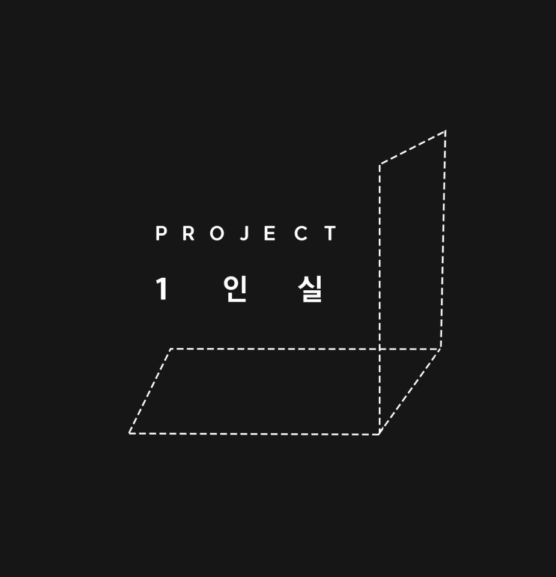

<!DOCTYPE html>
<html lang="en">
<head>
  <meta charset="UTF-8">
  <meta name="viewport" content="width=device-width, initial-scale=1.0">
  <title>프로젝트 1인실</title>
</head>
<body>

</body>
  <h1><a href="index.html">프로젝트 1인실(project_1room)</a></h1>
  <ol>
    <li><a href="1.html">프로젝트1인실</a></li>
    <li><a href="2.html">소개</a></li>
    <li><a href="3.html">활동연혁</a></li>
  </ol>

  <h2>프로젝트 1인실(project_1room) 이란?</h2>

  <a href="https://blog.naver.com/project1room" target="_blank" title="project1room_blog"><strong>프로젝트 1인실</strong></a>은
   <u>연출,작가,작곡가</u> 3명이서 2018년도에 조용히 만든 단체입니다.
  <br>'낙원','우리라는 이름이 식탁 위에 올랐다''세번째 얼굴'등의 작품들을 해놓았습니다.
  <br>연극과 낭독극 등 다양한 형식을 추구합니다.
  <br>
  <p>당신도 프로젝트 1인실에 참여할 수 있습니다.</p>
